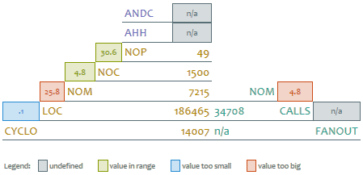

risorse | pyramid
L'Overview Pyramid è una rappresentazione sintetica dello stato di un progetto software.
La piramide è suddivisa in tre parti: il vertice, con le metriche relative alle gerarchie ereditarie, la parte di sinistra, con quelle associate alla dimensione e alla complessità del codice, e la parte di destra, con quelle sull'accoppiamento del sistema.
Il vertice della piramide mostra due indici relativi all'ereditarietà:
ANDC misura l'ampiezza media degli alberi di derivazione: valori bassi di questo parametro denotano gerarchie “strette”, che si sviluppano prevalentemente in verticale, mentre valori alti caratterizzano gerarchie “larghe”, che si sviluppano prevalentemente in orizzontale.
AHH misura la profondità media degli alberi di derivazione: valori bassi denotano gerarchie che si sviluppano su pochi livelli, viceversa, valori alti caratterizzano gerarchie piuttosto “alte” che si sviluppano cio&eagrave; su molti livelli.
Valori bassi di entrambi gli indici denotano l'assenza di strutture gerarchiche significative: il sistema è composto per la maggior parte di classi autonome.
La parte di sinistra della piramide riporta cinque indici relativi alla dimensione del codice e della sua complessità:
L'analisi della dimensione e della complessità del codice avviene sulla base dei rapporti di queste metriche:
La parte di destra della piramide riporta due indici relativi all'accoppiamento dei componenti del sistema:
L'analisi del grado di accoppiamento del sistema avviene sulla base dei rapporti di queste metriche:
Per generalità, ho predisposto una trasformazione XSLT che produce la piramide a partire da un file XML contenente le metriche di base. Segue un esempio di file XML sorgente:
<?xml version="1.0" encoding="us-ascii"?> <?xml-stylesheet type="text/xsl" href="pyramid.xsl"?> <pyramid tool="SourceMonitor"> <andc></andc> <ahh></ahh> <nop>49</nop> <noc>1500</noc> <nom>7215</nom> <loc>186497</loc> <cyclo>14009</cyclo> <calls>34714</calls> <fanout></fanout> </pyramid>
Il prospetto HTML prodotto dalla traformazione (cfr. esempio) riporta, oltre alla piramide, i valori soglia applicati ai diversi indici della piramide (sezione Thresholds), nonché delle indicazioni circa le possibili cause associate a valori fuori norma (sezione Smells).
Ho condotto il primo esperimento di costruzione della piramide con una versione beta di SourceMonitor, la 3.4.6.301 (quelle precedenti hanno qualche problema nell'esportazione dei dati da linea di comando).
La procedura si compone di due passi:
Ho sfruttato la capacità di SourceMonitor di esportare le metriche di dettaglio del progetto e quelle di metodo su file CSV: ho perciò predisposto un file batch per SourceMonitor con i riferimenti alle cartelle del progetto software da analizzare e ho preparato uno script Python per ricavare dai due file CSV le metriche necessarie alla costruzione della piramide. Ho infine automatizzato la procedura di esportazione e aggregazione delle metriche con un ulteriore file batch per il prompt.
Nota: SourceMonitor non determina tutte le metriche necessarie all'istanziazione degli indici della piramide (nella fattispecie: ANDC, AHH, NOP e FANOUT); per questo motivo, alcuni di essi sono marcati come n/a – not available. NOP viene stimato dallo script python, che assume essere equivalente al numero di cartelle in cui sono stati suddivisi i file sorgente.
Una volta copiati gli script pyramid.cmd e pyramid.py in una cartella dedicata, e aver salvato in una cartella denominata templates i due file pyramid.xsl e pyramid.css, il prospetto va generato lanciando il comando:
pyramid.cmd <sourcemonitor-command-file> <output-dir>
ove <sourcemonitor-command-file> è il percorso al file batch di SourceMonitor, mentre <output-dir> è il nome della cartella dove il prospetto sarà salvato.
Se la procedura si conclude senza errori, l'apertura del file <output-dir>\pyramid.xml in un qualunque browser produrrà il prospetto atteso.
Aggiornamento [28/11/2013].
Alla luce delle considerazioni fatte in Overview Pyramid con CCCC, conviene valutare se inibire il conteggio delle linee vuote (cfr. comando ignore_blank_lines). Poiché SourceMonitor determina pure il numero di istruzioni di cui è composto un metodo, è stata realizzata una nuova versione degli script (qui quello Python, qui quello per il prompt) che utilizzano questa stima come indice LOC. Per attivare questa modalità è sufficiente invocare pyramid.cmd specificando il flag --stmt come ultima opzione da riga di comando.
Pagina modificata il 27/11/2013